Andre Weiner, Chair of Fluid Mechanics
| 01 | machine learning tasks regression, classification, clustering, ... |
| 02 | optimizing settings with Bayesian optimization |
| 03 | understanding turbulent flows with modal decomposition |
| 04 | closed-loop flow control with model-based deep reinforcement learning |
regression, classification, clustering, ...
think in terms of machine learning tasks
(regression, classification, ...)
rather than specific algorithms
(neural networks, Gaussian processes, ...)
regression: matching inputs and continuous outputs
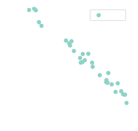
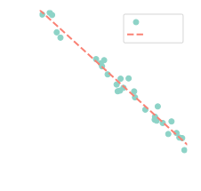
classification: matching inputs and discrete outputs
dim. reduction: finding low-dim. representations
clustering: grouping similar data points
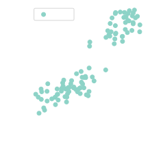
reinforcement learning: sequential decision making (control) under uncertainty
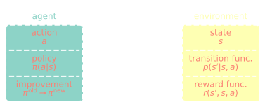
machine learning algorithms are essential to solve these tasks in higher dimensions
many problems need to be broken up into multiple tasks
reduced-order modeling
outlier detection (extreme events)
formulating sensible tasks requires
domain knowledge
with Bayesian optimization
joint work with
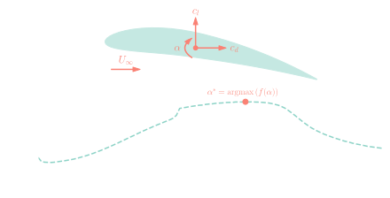
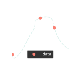
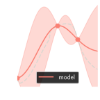
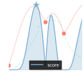
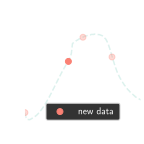
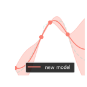
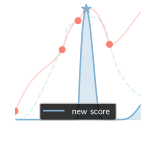
GAMG - generalized geometric algebraic multigrid
excellent introduction by Fluid Mechanics 101
full GAMG entry in fvSolution
p
{
solver GAMG;
smoother DICGaussSeidel;
tolerance 1e-06;
relTol 0.01;
cacheAgglomeration yes;
nCellsInCoarsestLevel 10;
processorAgglomerator none;
nPreSweeps 0;
preSweepsLevelMultiplier 1;
maxPreSweeps 10;
nPostSweeps 2;
postSweepsLevelMultiplier 1;
maxPostSweeps 10;
nFinestSweeps 2;
interpolateCorrection no;
scaleCorrection yes;
directSolveCoarsest no;
coarsestLevelCorr
{
solver PCG;
preconditioner DIC;
tolerance 1e-06;
relTol 0.01;
}
}
optimal settings depend on
$\rightarrow$ high-dim. search space with uncertainty
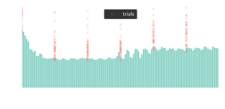
~15% runtime reduction
references & examples (GitHub)
with modal decomposition
joint work with
flow past a cylinder: $|\mathbf{u}|$ at $Re=dU_\mathrm{in}/\nu=100$
data $=$ spatial patterns $\times$ temporal patterns
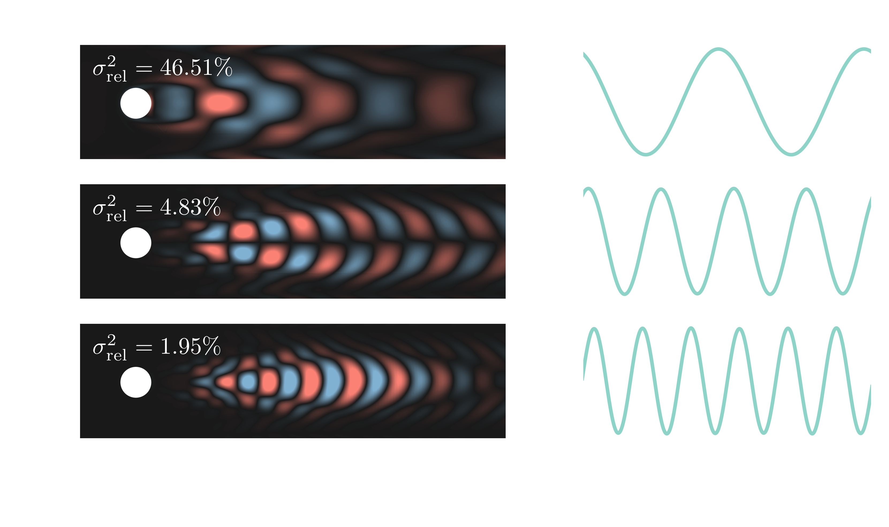
$|\mathbf{u}|$ at $Re=dU_\mathrm{in}/\nu=3700$; DNS setup based on
O. Lehmkuhl et al. (2013)
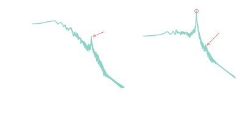
PSD of force coefficients (p-Welch, 4 segments)
$St=fT_\mathrm{conv}$ and $T_\mathrm{conv}=d/U_\mathrm{in}$
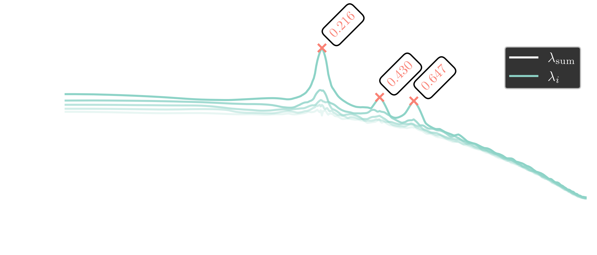
adaptive sin-taper spectral POD
refer to B. C. Y. Yeung, O. T. Schmidt (2024)
vortex shedding mode
$St\approx 0.22$, streamwise component
Airbus XRF-1 shock buffet mode ($Re_\infty = 3.3\times 10^6$, $Ma_\infty =0.84$, $\alpha=-4^\circ$); DDES by S. Spinner (DLR)
references & examples
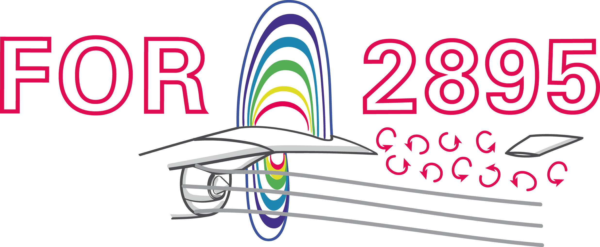
with model-based deep reinforcement learning
joint work with Janis Geise (TU Dresden)
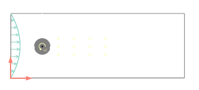
closed-loop control benchmark, $Re=100$
instantaneous reward $R_n$
$$ R_n = 3 - (c_{x,n} + 0.1 |c_{y,n}|) $$
$c_{i, n}$ - force coefficients at step $n$
evaluation of optimal policy (control law)
evaluation of optimal policy (control law)
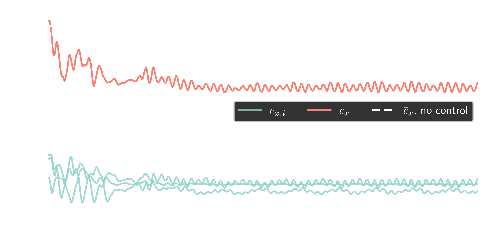
drag reduction by approx. $25\%$
references